There Is No Spoon
The only way to be an engineerMatteo Di Paolantonio 23/04/2026
Agenda
- "There is no spoon"
- The Sherpa tango
- Engineering
- Business
- Innovation
- From the basement to the tower
There is no spoon
“Do not try and bend the spoon. That’s impossible. Instead, only try to realize the truth… there is no spoon.”
The question
When was the last time you asked WHY before asking HOW?
The bet
“If your values don’t cost you money, they’re just opinions.”
- 4 Founders
- All betting everything on a WHY
The Sherpa tango
Where we came fromValidate before you build
- Preparation: The Mom Test — How to Start a Startup — Go-To-Market Toolkit ...and many others
- Customer first: interviews — money on the table — early adopters
- Iterate fast: lean canvas
The Wizard of Oz
Our product was a hand-crafted PDFTHE PDF
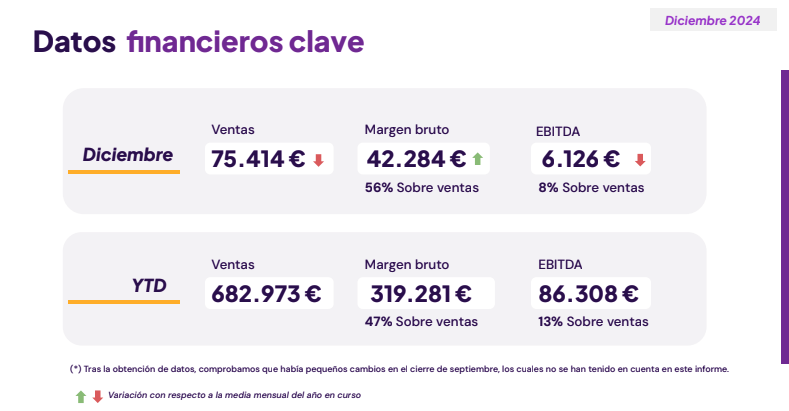
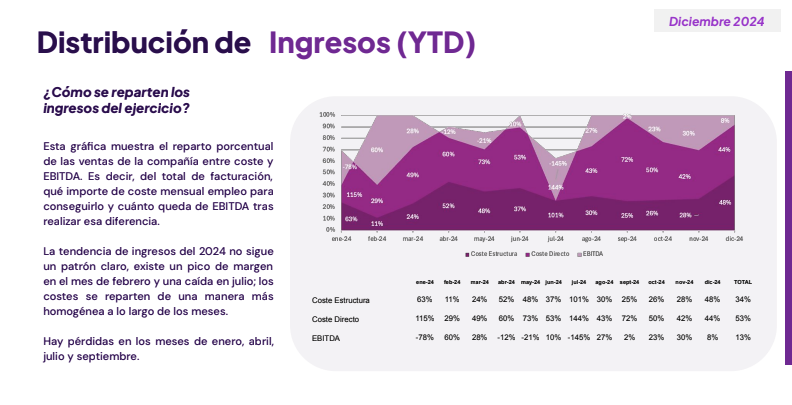
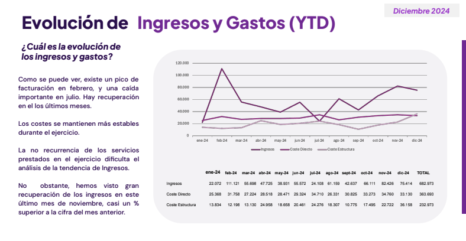
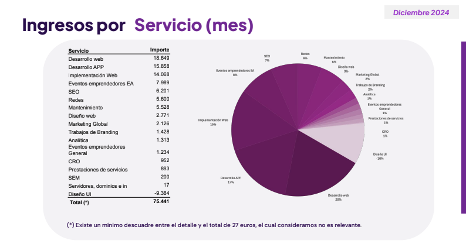
The minimum to get started
A month and a half to production- Landing page
- Login
- Holded integration (ERP Data)
- GoCardless integration (Bank Data)
Business problem solved
... so farEngineering

Tech stack
-
Vercel — IaaS, merge to
main and you're in production
Spoiler: serverless and heavy data ingestion don't get along -
Supabase — SQL, auth with
JWT (no vendor lock-in)
Spoiler: this one we actually got right, but used it wrong -
NextJS — SSR, Server
Actions, "no brainer"
Spoiler: a NextJS monolith is basically impossible to move
Architecture
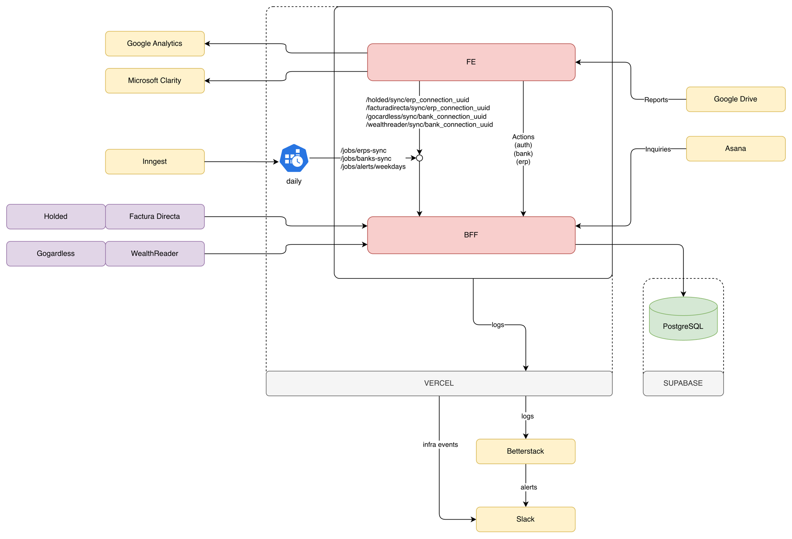
The first timeout
Serverless + ingesting data for 10 clients- Vercel functions have a 5 min timeout
- 10 users × 30 seconds each = kaboom
The first timeout
Inngest
export default inngest.createFunction(
{ id: 'banks-sync', retries: 0 },
{ cron: 'TZ=Europe/Madrid 0 6,15 * * *' },
async ({ step }) => {
const connections = await step.run(`banks-sync-companies`, async () => {
log.info('start syncing bank data for each company via inngest')
return prisma.bankConnection.findMany()
})
await step.run('send-connections-bank-sync-events', async () => {
const events = connections.map((connection) => ({
name: 'bank/sync.requested',
data: { connectionUuid: connection.uuid },
}))
await inngest.send(events)
return { eventsSent: events.length }
})
return {
count: connections.length,
message: 'triggered syncing bank data for each company and bank',
}
}
)
The coupled data model
Holded forever... or not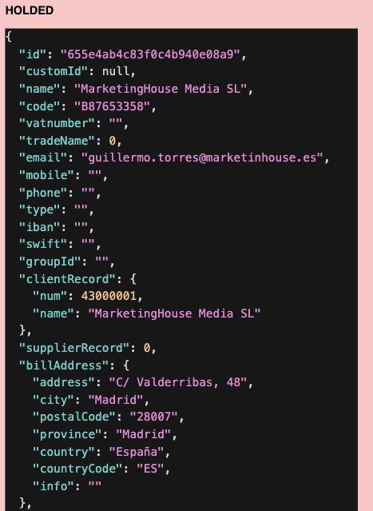
model ErpContact {
uuid String @id @default(uuid())
externalSystem ErpExternalSystem
externalSystemId String
name String
code String?
email String?
country String?
zipCode String?
externalSystemDataHash String
erpConnectionUuid String
erpConnection ErpConnection
erpDocument ErpDocument[]
erpRecurringDocument ErpRecurringDocument[]
@@index([erpConnectionUuid])
@@index([erpConnectionUuid, name])
@@map("erp_contact")
}
The coupled data model
Make it agnostic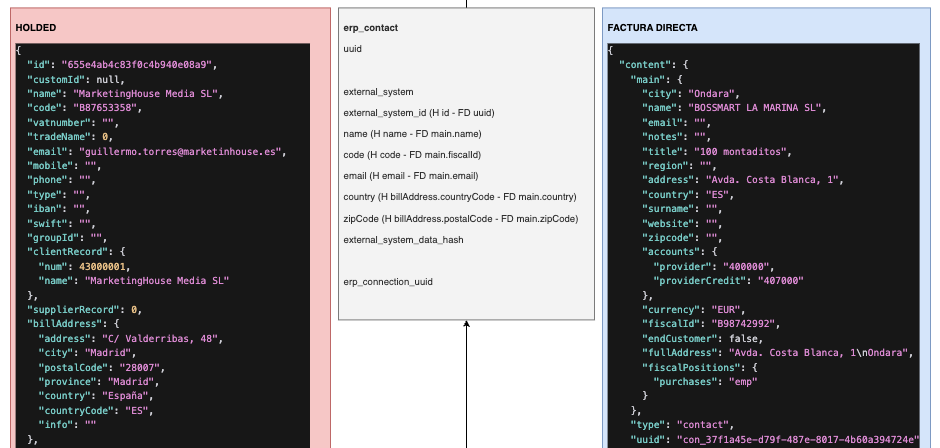
The coupled data model
Make it use deltas
const calculateDelta = <
T extends {
externalSystemId: string | null
internalId?: string
externalSystemDataHash: string
uuid: string
},
>(
fromDb: T[],
fromSource: T[],
key: keyof T,
): DeltaResult<T> => {
const fromDbMap = new Map(fromDb.map((item) => [item[key], item]))
const fromSourceMap = new Map(fromSource.map((item) => [item[key], item]))
const toCreate = fromSource.filter((item) => !fromDbMap.has(item[key]))
const toDelete = fromDb.filter((item) => !fromSourceMap.has(item[key]))
const toUpdate: T[] = []
fromDb.forEach((dbItem) => {
const sourceItem = fromSourceMap.get(dbItem[key])
if (
sourceItem &&
sourceItem.externalSystemDataHash !== dbItem.externalSystemDataHash
) {
const itemToUpdate = { ...sourceItem, uuid: dbItem.uuid }
toUpdate.push(itemToUpdate)
}
})
toDelete.forEach((deletedItem) => { fromDbMap.delete(deletedItem[key]) })
toUpdate.forEach((updatedItem) => { fromDbMap.set(updatedItem[key], updatedItem) })
toCreate.forEach((createdItem) => { fromDbMap.set(createdItem[key], createdItem) })
return { toCreate, toDelete, toUpdate, upToDate: Array.from(fromDbMap.values()) }
}
The coupled architecture
Server actions, one night stand
export async function getProfitAndLossReport({
companyGroupId,
date,
}: {
companyGroupId: string
date: string
}): Promise<CompanyGroupReport> {
const dateFrom = moment.utc(date).startOf('year')
const isCurrentYear = moment.utc().year() === moment.utc(date).year()
const ytdDate = moment.utc(date).subtract(1, 'month').endOf('month')
const dateTo = isCurrentYear ? ytdDate : moment.utc(date).endOf('year')
const companyUuids = await getCompanyIdsByCompanyGroupId(companyGroupId)
if (companyUuids.length === 0) {
return { success: false, reason: ErrorReason.UNAUTHORIZED }
}
try {
const companiesProfitAndLoss = await Promise.all(
companyUuids.map(async (companyUuid) =>
generateCompanyProfitAndLossReport({ companyUuid, dateFrom, dateTo })
)
)
return { success: true, data: companiesProfitAndLoss }
} catch (err) {
log.error(
{ err, company_group_uuid: companyGroupId },
'Error generating profit and loss report'
)
return { success: false, reason: ErrorReason.INTERNAL_ERROR }
}
}
The coupled architecture
Old good APIs
// GET balance report by company group and year
export const GET = withAuth(
async (request, { user, log }, { params }: { params: Promise<Params> }) => {
try {
const { id: companyGroupId } = await params
const searchParams = new URL(request.url).searchParams
const companyId = searchParams.get('companyId')
if (!companyId) {
return NextResponse.json(
{ error: 'companyId query parameter is required' },
{ status: 400 }
)
}
await resolveAuthorizedCompanyScope({
user,
requestedCompanyGroupId: companyGroupId,
requestedCompanyIds: [companyId],
})
const yearParam = searchParams.get('year')
if (!yearParam) {
return NextResponse.json(
{ error: 'year query parameter is required' },
{ status: 400 }
)
}
const year = parseInt(yearParam, 10)
if (isNaN(year)) {
return NextResponse.json(
{ error: 'year must be a valid number' },
{ status: 400 }
)
}
const report = await balanceReportService.getBalanceReport(
companyId,
year
)
return NextResponse.json(report)
} catch (err) {
log.error({ err }, 'Error getting balance report')
return handleHttpError(err)
}
}
)
It doesn't scale
Our mantra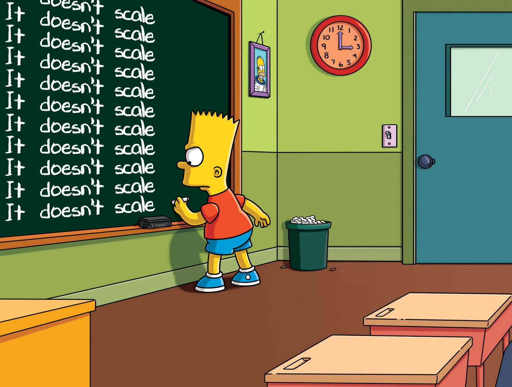
Business
The source of truth — More clients, more money- Serverless timeouts: more data
- Coupled data model: new integrations
- Server actions: higher usage
It doesn't scale → It scales according to the business
ICE Framework
How we prioritized what to build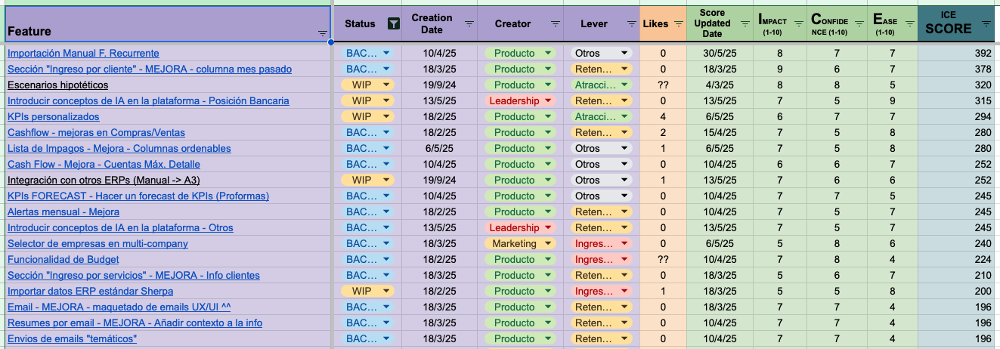
Helping the ICP
... the main goal- Mini tools — free apps (e.g. project-profitability, financing-advisor)
- Blog — tech authority (e.g. integrating ERPs)
- Ebooks — aggregated data (e.g. market benchmark)
The tradeoff
... always to solve a business problem“You can take on all the technical tasks as a founder at the cost of time, or you can delegate to people better than you at the cost of money.”
- A frontend wizard
- A unicorn wizard
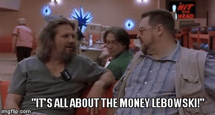
Innovation
“Doing the latest instead of always doing the same”
AI as a Multiplier
- Vercel + NextJS + Supabase
- ChatGPT
- Cursor
Claude, where were you?
Claude
Game changer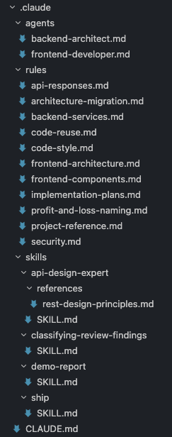
Code is becoming a commodity
AI doesn't replace you (right now) — it amplifies youWhat's left? Understanding the problem.
"Anyone can code" — but not anyone can understand what to build and why
It was always the WHY
- We asked WHY before building → a PDF validated the problem
- Every technical spoiler? A business WHY in disguise
- AI commoditizes the HOW → the WHY is what's left
From the basement to the tower
Product Market Fit → Product Partner Fit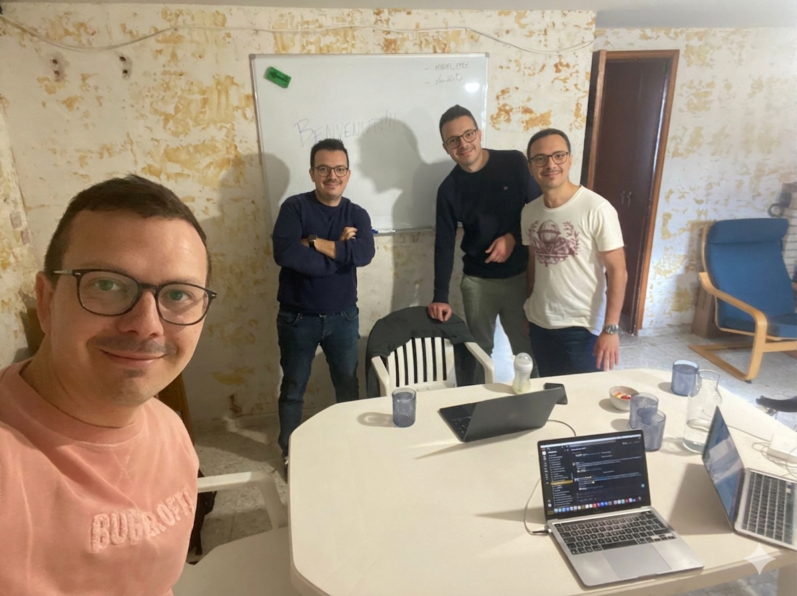
"There is no spoon"
The engineer who asks HOW
- Writes code
- Follows specs
- Builds features
The engineer who asks WHY
- Solves problems
- Drives decisions
- Generates impact
“Do not try and bend the code. Instead, only try to realize the truth… there is no code without a WHY.”